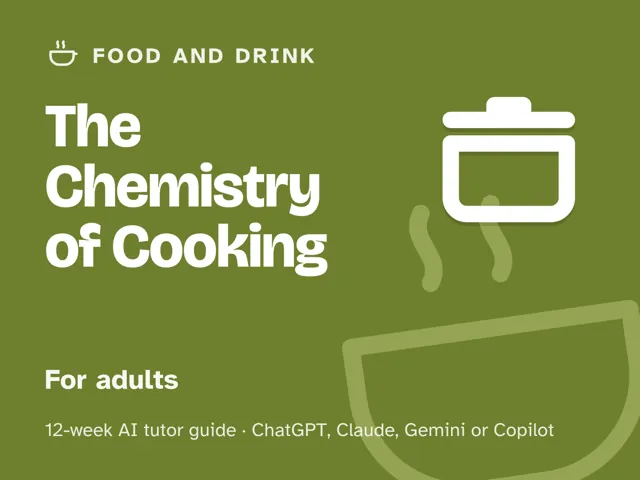
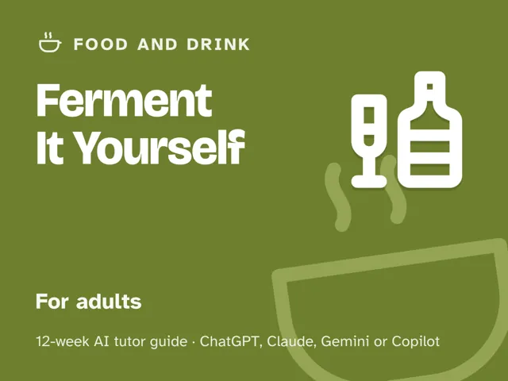

Ferment It Yourself
$29Instant download: a PDF to read, a browser copy, and the AI-tutor file you hand straight to any AI assistant.Buy it on Etsy →
Take the free placement check first: 15 minutes, and it names the week to start at.
Stop following recipes you don't understand and hoping for the best. This 12-week plan turns an AI tutor into a patient fermentation scientist: it teaches you the microbiology behind salt, acid, and the anaerobic environment (the actual reasons a ferment turns out safe and delicious), so you can read any jar on sight and troubleshoot it yourself. No experience needed, and it is set up to tell you plainly when a batch needs to be tossed.
What you get
This is a digital guide: a deep, ready-to-run curriculum, not a PDF handout. It includes a "Never used an AI chat assistant? Start here" section that takes a complete beginner from zero to ready in about five minutes, plus four rescue prompts up front for when things go sideways. - 12 ready-to-run weekly sessions (about 60 minutes each), every one fully scripted: a plain-language concept explainer, a concrete worked example, a timed session plan with the AI-tutor instructions built in, hands-on kitchen work (real ferments from Week 3 on), a "show me" checkpoint, common mistakes to watch for, and practice to lock it in. You lead the session; the guide and the AI tutor do the rest; no expertise needed. - An orientation that starts where every safe ferment starts (understanding the microbes and the salt-ratio math) and the one rule that keeps you safe: know the mechanism before you trust the jar. - Four rescue prompts for when a batch worries you, when the AI skips to instructions, when it feels too easy ("level me up"), and to check you really understand, plus safety guardrails in every session's tutor instructions, written so a risky ferment doesn't slide. - A working fermentation station and rotation you build and keep going past week 12.
The 12 weeks
- What Fermentation Actually Is
- Salt, Brine, and Why the Ratios Are a Safety Matter
- Your First Sauerkraut
- Pickles & Lacto-Ferments
- Spoilage vs. Healthy Ferment: The Safety Rules
- A Sourdough Starter
- Yogurt & Cultured Dairy
- Flavor, Temperature & Timing
- Troubleshooting & Widening Your Repertoire
- Project Week I: Design Your Own Ferment
- Project Week II: Build and Tend It
- Demo Day and Your Fermentation Station
Who it's for
Adults who want to safely make their own fermented foods and actually understand what's happening in the jar. Total beginners welcome, no science background assumed.
Why this instead of a free chatbot
A raw chatbot will hand you a recipe with confidence whether or not it's safe. This pack ships the structure and guardrails it lacks: a microbiology-first method, a real 12-week progression, and a tutor set up to check your salt ratios and submersion every time, and to tell you flatly to discard a batch when something's actually wrong, instead of reassuring you into a risk. Understanding beats guessing, especially with something you're going to eat.
Safety
This is educational content, not food-safety certification. Fermentation carries real risks, including botulism, when ratios or cleanliness go wrong. The pack teaches tested salt and acid ranges, full submersion, and how to recognize spoilage, and the rule that governs all of it: when in doubt, throw it out. It also flags the kitchen hazards where they come up (knives and mandolines, raw flour, hot milk, chilies), and an adult supervises any child who helps.
FAQ
- Do I need any experience? None. Week 1 starts with what the microbes are actually doing; every ferment is broken into small, checked steps.
- Which AI does it use? I've never used one. Any modern AI assistant: ChatGPT, Claude, Copilot, or Gemini. The free version of any of them is enough; you don't need a paid plan. If you've never opened one before, the guide's first section walks you through setup in about five minutes before Week 1 starts.
- Is this safe? Who's liable? It's educational only. It teaches tested salt/acid ratios, full submersion, and spoilage red flags, and the tutor is guardrailed to tell you to discard anything questionable. You assume the usual food-safety risk: follow the ratios, keep things clean and submerged, and when in doubt, throw it out. Consult a trusted food-safety authority (such as your national extension service) for anything beyond simple fridge-fermentation.
- Do I need special equipment? No. Jars, a kitchen scale, something to weigh the ferment down, and (for the yogurt week) a kitchen thermometer get you through the whole season.
- I'm not in the US. Will it work for me? Yes. The guide is written in US English, and every weekly launch prompt tells the AI to use your country or region for spelling, units, money, and examples. The tutor points you to your own food-safety authority whenever official guidance matters.
- Refunds? Standard marketplace refund policy applies.
$29Instant download: a PDF to read, a browser copy, and the AI-tutor file you hand straight to any AI assistant.Buy it on Etsy →